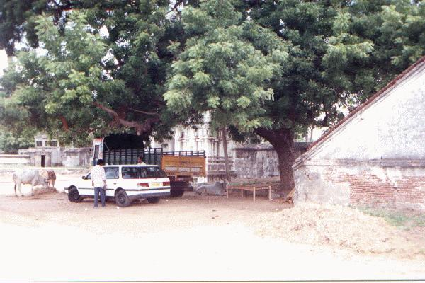
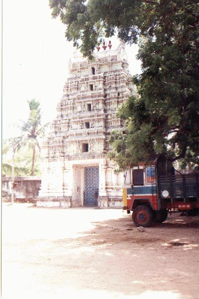
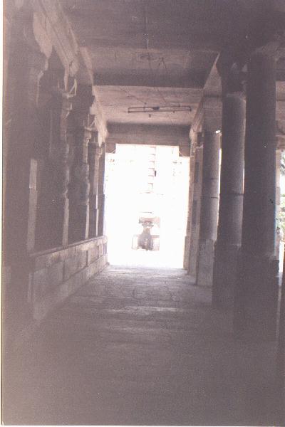
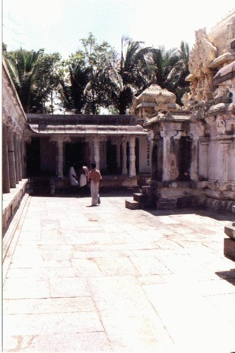
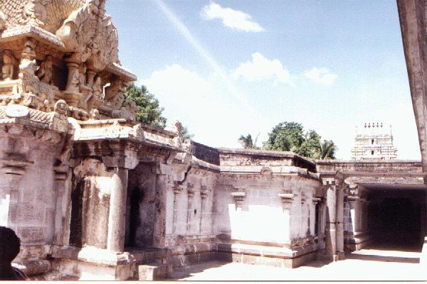
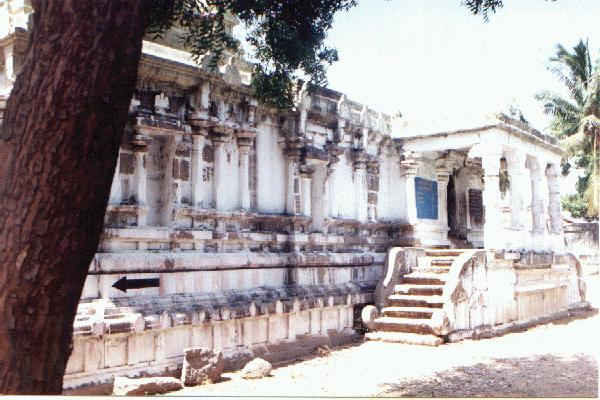
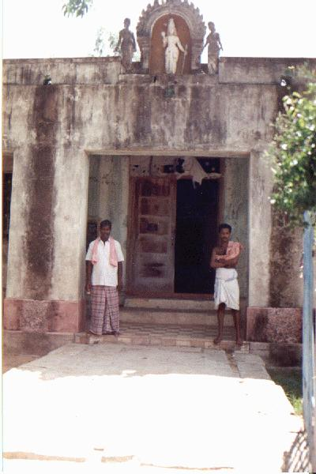
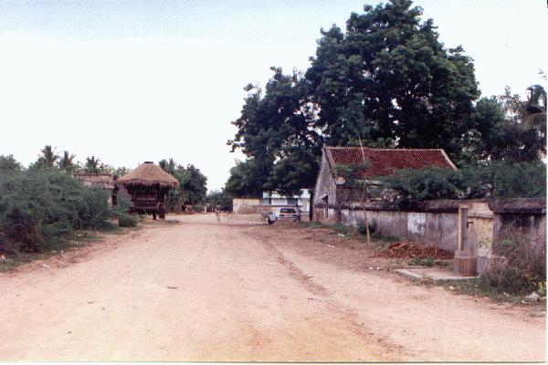

nāvalūr
- Identifier: NA08
- Modern Name (NIC):
- Modern Name (M.I.): tirunāma nallūr, tiru nāvalūr
- Modern Name (Govt Press): tirunāmanallūr
- Modern Name: Tirunāvalūr
- Modern District & Taluk: viḻuppuram DT (tirukkōyilūr TK or uḷuntūr pēṭṭi TK)
- Old administrative location: South Arcot DT (Tricalore TK)
- Nearby town:
- Railway station: Paṇṇuruṭṭi (W: 16km)
- [TO BE CHECKED?] Longit. 79 deg. 24'; Latit. 11 deg. 46' [NA08]
- C.D.Maclean-3: entry: TRICALORE, p. 924, col. 1,
[Tirnumanullore [tiruṇāmanallūr],
inscriptions of chola dynasty,
lat. 11deg. 52', long. 79deg. 27']
- Location: according to PK: Naṭu Nāṭu (NA08)
- Name inside hymns:
- Name inside PK: pukaḻē viñcu tirunāvalūr
- Rank inside third volume of PIFI: 171
- Rank inside Civastala Mañcari: 169
- Rank on PY576 map: 63
- Total number of patikam-s: 1
- Cuntarar: 1 patikam
22 pictures taken on 1998 August 4th (Tuesday, 1h30 p.m.)
















- Patikam 7_17